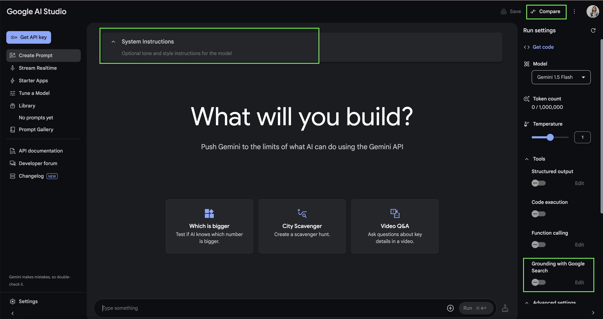
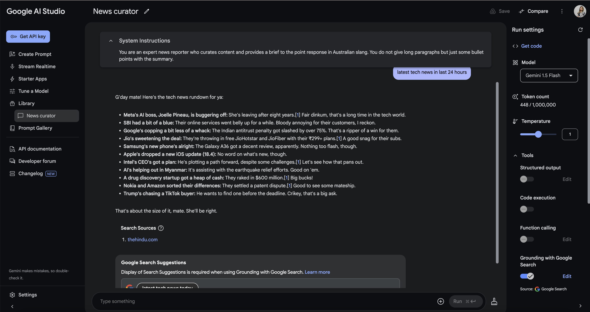
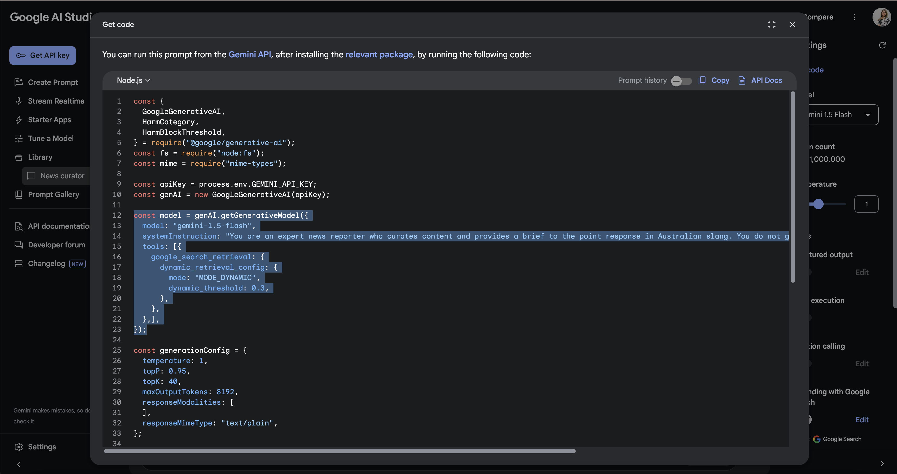
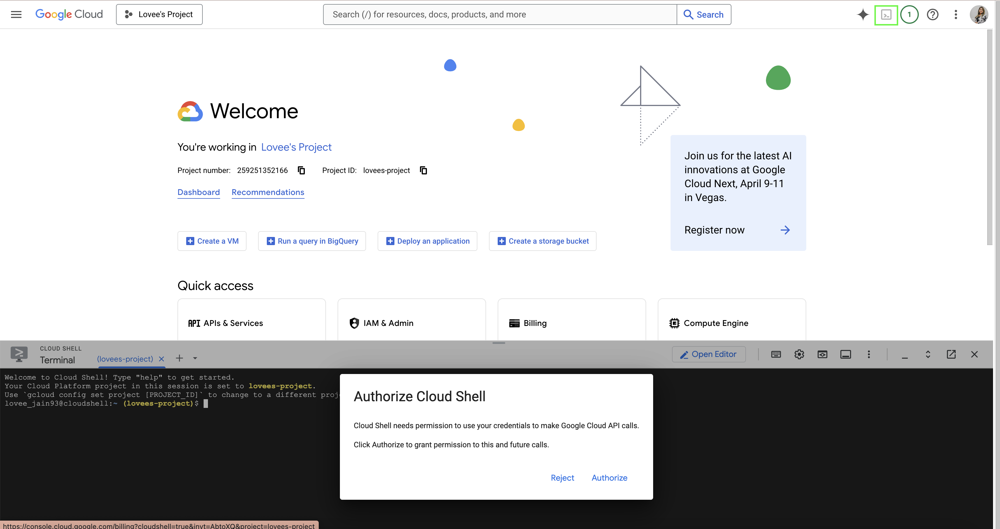
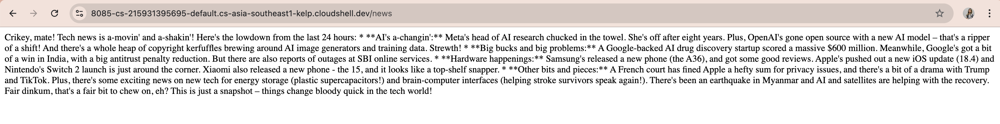
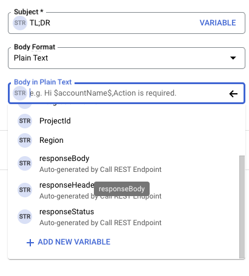
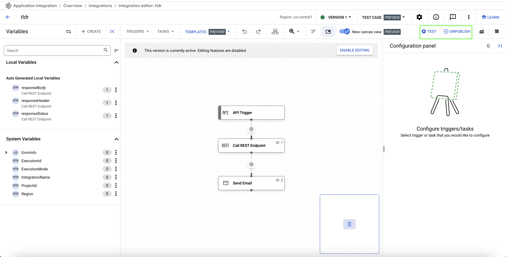
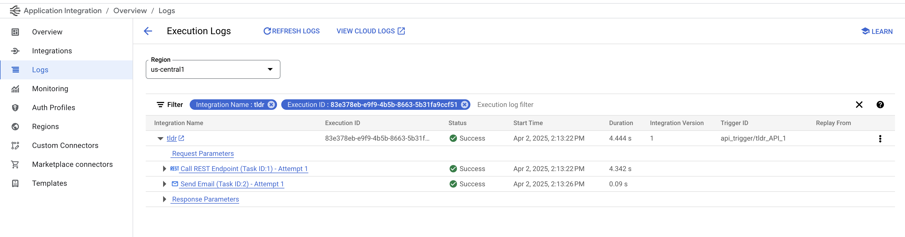
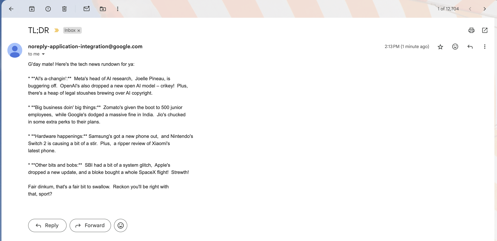

In this codelab, you'll learn how to build your own personalised "Too Long; Didn't Read" (TL;DR) tech news application. We'll leverage the power of the Gemini API and the Google Search Retrieval Tool to create a backend API that fetches and summarises the latest tech news based on your interests. Once our API is ready, we'll deploy it effortlessly on Google Cloud Run. Finally, we'll harness the simplicity of Google Cloud's Application Integration to create a low-code/no-code automation that calls our API and delivers the curated news digest directly to your email inbox. Get ready to streamline your news consumption!
Just want to highlight the fact that this is an evolving space and hence there are new changes everyday. When I wrote this codelab, I used Gemini 1.5 Flash model with Gemini SDK which is now deprecated, and therefore, I have updated the code with latest models and the new GenAI SDK, however, have left some old screenshots from AI Studio, for you to understand and compare.
vertex-implementation branch for vertex-ai implementation of the codelab2.0-plus-models branch for playing around with 2.0+ models with Gemini SDKuse-gemini-sdk branch for original old code with Gemini SDK and Gemini 1.5 Flash model
Please note: We will be using Gemini 2.5 Flash Preview model all across our workshop.
You are an expert news reporter who curates content and provides a brief to the point response in Australian slang. You do not give long paragraphs but just some bullet points with the summary.


Click on the Activate Cloud Shell button on top right and authorise the cloud shell.

mkdir news-curator
cd news-curator
npm init -y
touch index.js
index.js:import express from "express";
import dotenv from "dotenv";
const app = express();
app.use(express.json());
dotenv.config();
const port = process.env.PORT || 3000;
app.listen(port, async () => {
console.log(`Server is running on port ${port}`);
});
app.get("/", (req, res) => {
res.send("Hello World");
});
.env file with the following variable:PORT = 8080
package.json by adding following scripts and also updating the type to module to support import statements."scripts": {
"start": "node index.js",
"dev": "nodemon index.js",
"test": "echo \"Error: no test specified\" && exit 1"
},
"type": "module",
npm install express dotenv nodemon
This is what your package.json should look like after installing the packages:
{
"name": "news-curator",
"version": "1.0.0",
"description": "",
"main": "index.js",
"type": "module",
"scripts": {
"start": "node index.js",
"dev": "nodemon index.js",
"test": "echo \"Error: no test specified\" && exit 1"
},
"keywords": [],
"author": "",
"license": "ISC",
"dependencies": {
"dotenv": "^16.4.7",
"express": "^4.21.2",
"nodemon": "^3.1.9"
}
}
npm run dev
Your application will now be running on port 8080 and you can view it by clicking on the Web Preview button, which will take you to a new page that will say Hello World.
Your basic express API is now initialised and working!
In this step we will be adding Gemini with Google search grouding bits of code and create a new API endpoint.
.env file.GEMINI_API_KEY = //YOUR_API_KEY
index.js file. So let's first start by importing the GenAI package:import { GoogleGenAI } from "@google/genai";
const apiKey = process.env.GEMINI_API_KEY;
const geminiAI = new GoogleGenAI({apiKey});
/news where you pass in the prompt to get the latest tech news to your model. First you initialise a chat and then send the prompt as message to your chat and wait for the result to come back:app.get("/news", async (req, res) => {
const prompt = "latest tech news in last 24 hours"
// Initialize the chat with the model and tools
const chat = await geminiAI.chats.create({
model: "gemini-2.5-flash",
config: {
tools: [
{
googleSearch: {}
}
],
systemInstruction: "You are an expert news reporter who curates content and provides a brief to the point response in Australian slang. You do not give long paragraphs but just some bullet points with the summary."
}
})
// Send the prompt and wait for the result
const result = await chat.sendMessage({"message": prompt})
res.send(result.text);
})
Don't worry, if you missed the above steps, you can find the index.js and whole code on Github.
npm install @google/genai
npm run dev
Browse to the Web Preview and update the url to add /news and you will now get some curated news items!

Tada! 🎉 Your API is ready!
It's time to deploy our application to Cloud Run!
Go to terminal and enter the following command to enable the Cloud Build and Run APIs first:
gcloud services enable run.googleapis.com \
cloudbuild.googleapis.com
[OPTIONAL] If you get an error and it needs you to authorise first, just run:
gcloud auth login
Once you have enabled the APIs, you can now deploy using:
gcloud run deploy news-curator --source . --region us-central1 --allow-unauthenticated
Note: We are allowing unauthenticated invocations for now - Don't do this in Production.
It will use Buildpack to create a container image of your application and then push it to the registry. Next, it will create and manage container instances by pulling this image from the registry.
Once done, you should be able to see a service URL, try it:
https://news-curator-123456789.us-central1.run.app/news
Congratulations, you have done the hard part! It's time to do some automation!
In your Cloud Console, search for application integration and create a new integration.
tldr.Sends curated tech news to me!responseBody as an autogenerated variable from Call Rest Endpoint step.



Congratulations, you have now created your personal TL;DR app that runs whenever you call it! 🎉
Well done on creating your own TL;DR app, but isn't it missing something?
While it is working every time you are triggering it manually, what you want is to get your news bytes daily. And for that you need to update your API trigger to a Schedule Trigger!
Setting up Schedule Trigger is easy, all you need to do is provide the time of the day and frequency. Now you can do that in the basic tab or go to advanced and provide a cron time in the configuration panel. However, what you want to be careful about is the difference in timezone.All time settings are GMT 08:00 - America/Los Angeles.
Now, I am not an expert at it, so I ask Gemini to give me the correct time conversion value and it works! I get my daily updates at 8 pm everyday 😉
Are you ready to set up yours?
Github Respository: https://github.com/Lovee93/news-curator